快晴の朝のドッグランと、アグリパーク竜王・高野いちご園。滋賀1泊2日の犬連れ旅（2日目）
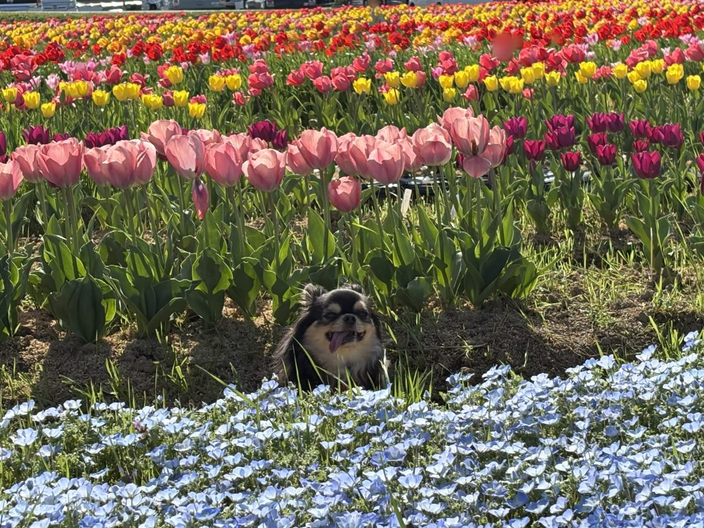
2日目のはじまり
滋賀・琵琶湖西岸1泊2日の2日目。1日目は大雨で、R cafeの屋根付きテラスでランチ、かばたリゾートの室内ドッグランで遊んで、夜は温泉付きコテージのホリデーアフタヌーンに泊まった。
1日目: R cafeでランチ → かばたリゾートで室内ドッグラン → ホリデーアフタヌーンで1泊（1日目の記事）
2日目（この記事）: チェックアウト後にドッグランで遊ぶ → アグリパーク竜王を散策 → 高野いちご園でいちご狩り
2日目（快晴）
ホリデーアフタヌーンの朝のドッグラン
朝、こつぶを連れてコテージの中庭を散歩。そのあと温泉にもう一度入ってから本館へ移動してチェックアウト。
2日目は嘘のようにピーカンの晴天。せっかくなのでチェックアウト後にドッグランで遊ぶことに。朝の時間帯だったのでここも貸切状態。今回の旅行、どこ行ってもほとんど貸切状態だった。
ホリデーアフタヌーンには2,000㎡の天然芝ドッグランがあり、宿泊者は無料で使える。
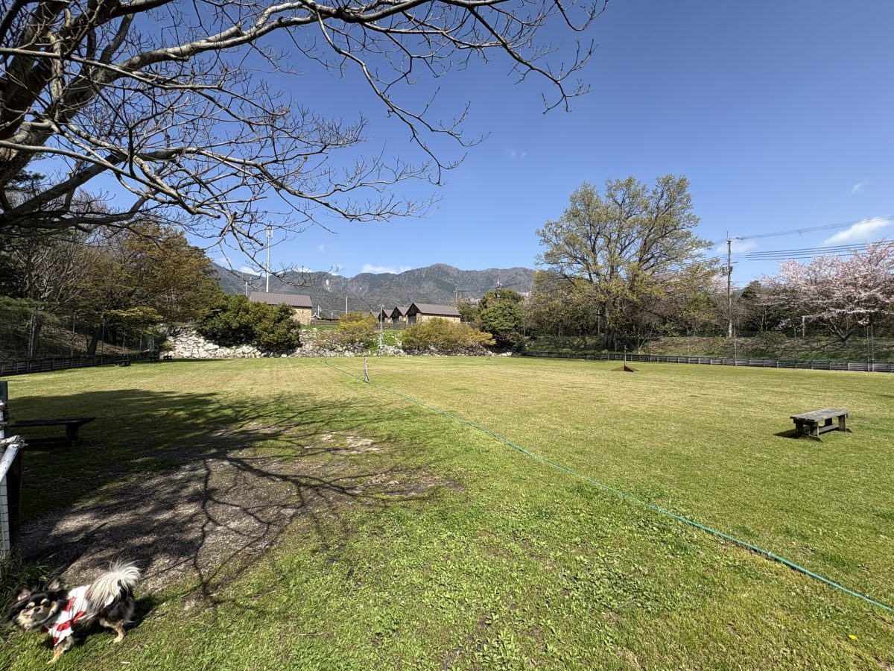
広い天然芝のドッグランから山の景色が見えて気持ちいい。桜はほぼ葉桜で終わりかけだったけど、それでも開放感は抜群。
ホリデーアフタヌーンのカフェでパンをテイクアウト
次の目的地のいちご狩りの予約時間が近づいてきたので、出発前に本館の受付横で販売しているパンをテイクアウトで購入。美味しかった。
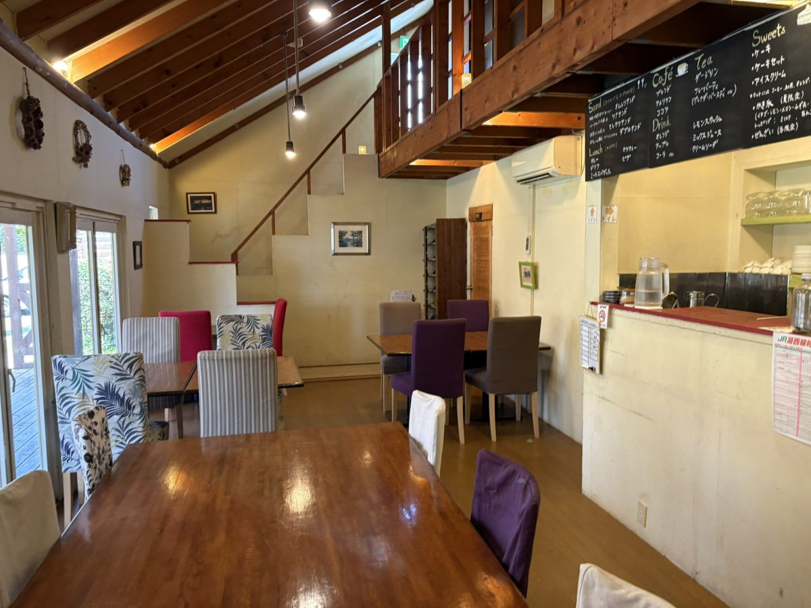
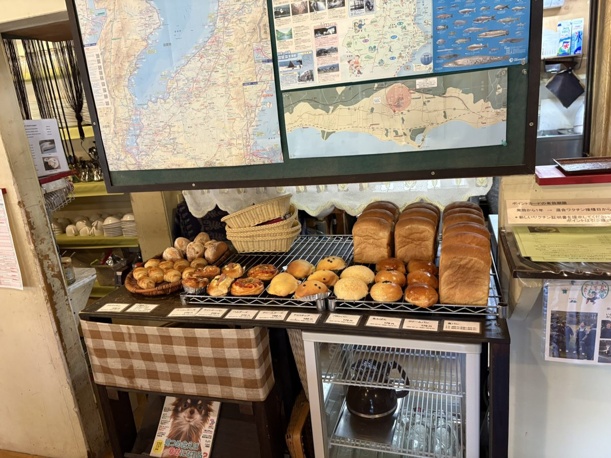
道の駅アグリパーク竜王を散策
高野いちご園の予約時間まで少し余裕があったので、すぐ隣にあるアグリパーク竜王に寄ることに。
アグリパーク竜王は、道の駅と農業公園が一体になった大きな施設。実は過去にも来たことがあったのだけれど、奥に進むとなんとドッグランの文字を発見。少し奥まった場所にあって前回は気づかなかった。
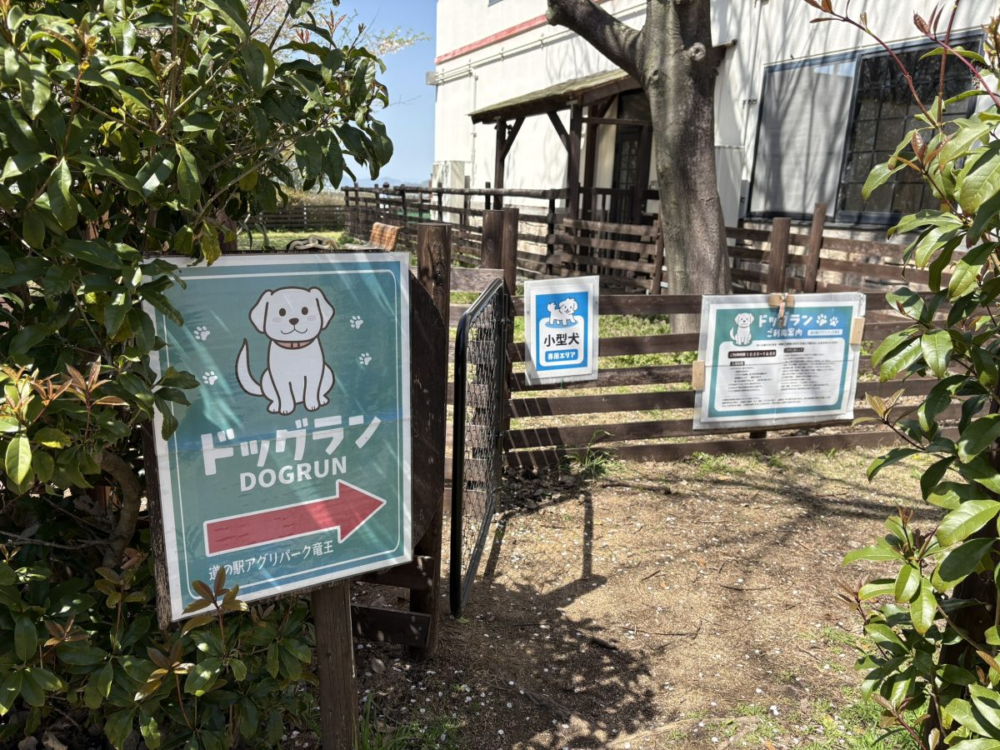
ドッグラン内には桜の木もあったけど、今回訪れた時は軒並み葉桜で、ほぼ終わりかけだった。
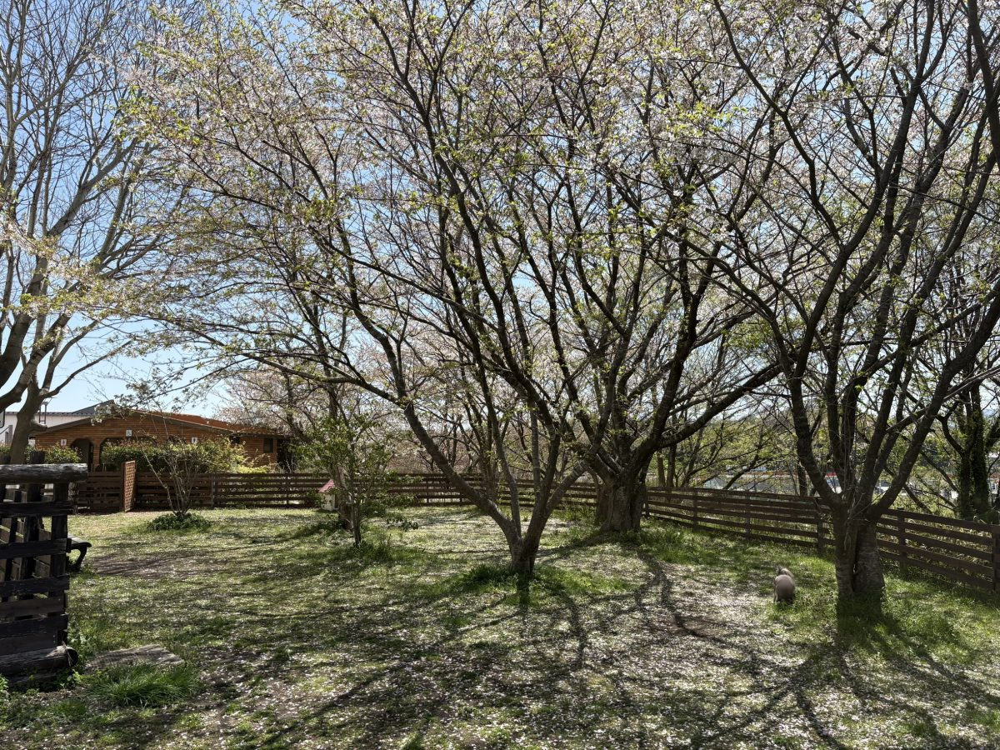
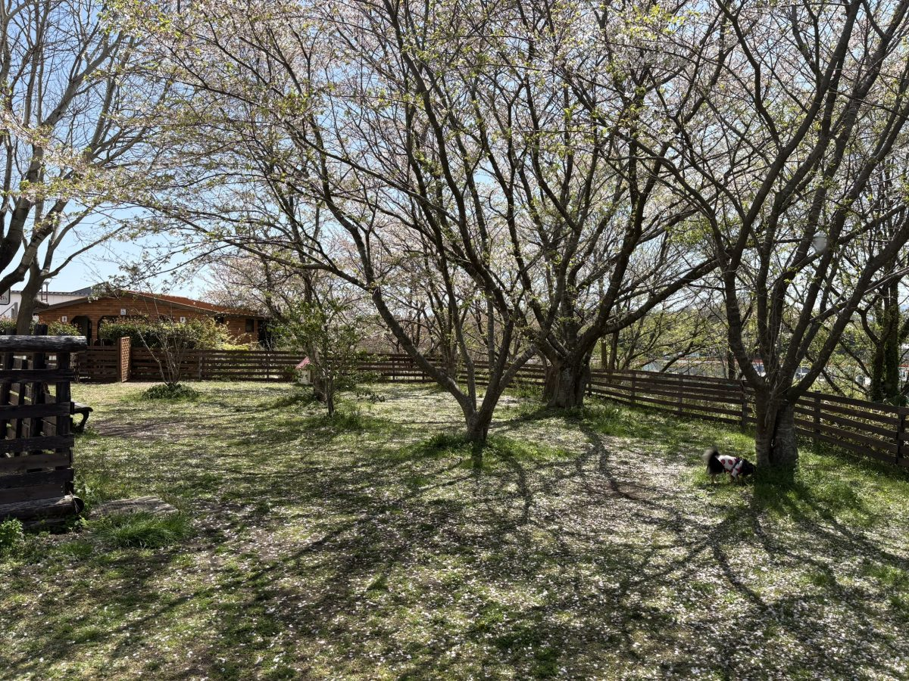
早速こつぶを放して遊ばせる。最初は貸切、そのあと2組のわんこが来てみんなで交流。他のわんことたくさん遊べて満足そうだった。
ドッグランから少し歩くと、とても綺麗な花畑が広がっていた。チューリップとネモフィラが満開で、青と赤・黄色・ピンクのコントラストが見事。花畑エリアは犬連れOKで、他にも犬連れの人がたくさんいた。
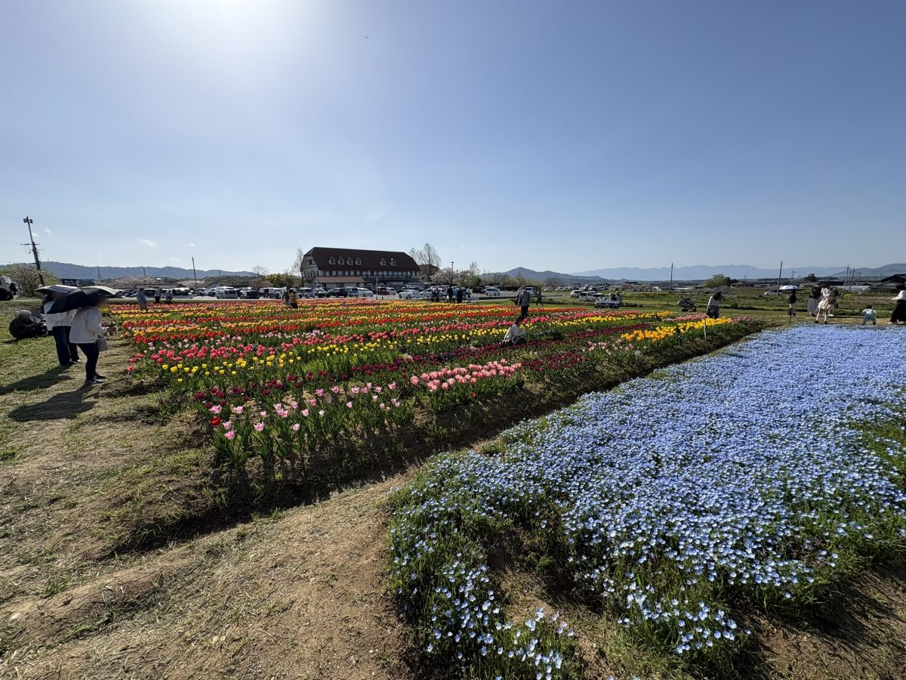
こつぶは花よりも太陽と風に夢中で、カメラの方はどこ吹く風。そんな気ままな姿もまた愛おしい。
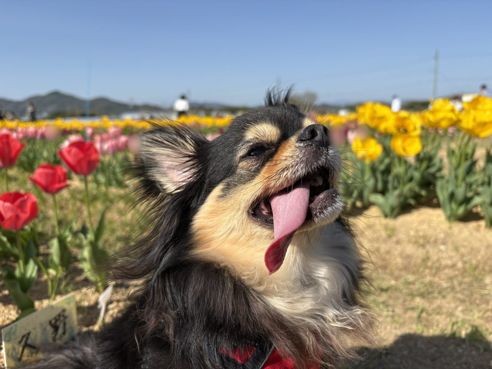
アグリパーク竜王のポイント
- ドッグランあり（奥まった場所にあるので要注意）
- チューリップ約16,000本とネモフィラの花畑（4月上旬〜中旬が見頃）
- 駐車場無料、入場無料
- 動物ふれあい広場はペット同伴不可
高野いちご園（第2）でいちご食べ放題
予約時間が近づいたので隣の高野いちご園へ移動。ここは犬連れでいちご狩りができる数少ない農園で、去年も訪れた。
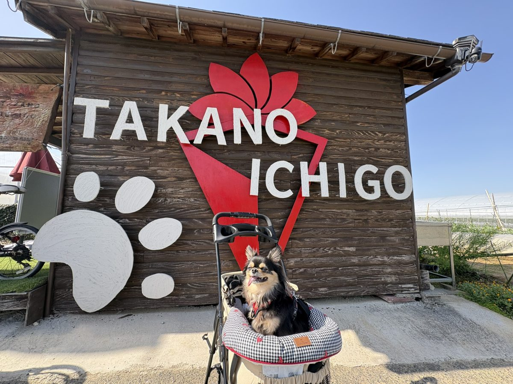
去年と比べて受付の建物がガラッと変わっていてびっくり。去年は平日で空いていたけれど、今回は人が多かった。
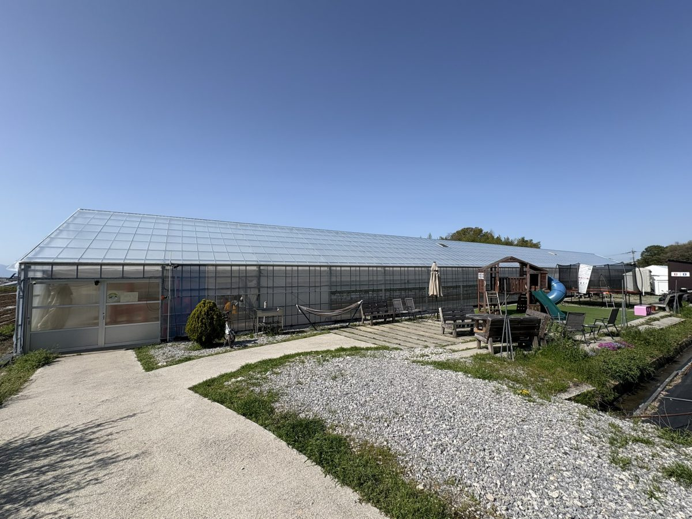
犬連れは第2農園専用（詳細はHP参照）。カートにこつぶを乗せていちご狩り開始。今回は3つのハウス（9と10、それにすべり台のある大きなハウス）を自由に行き来できるとのこと。今年からドリンクバーも設置されていて、去年よりパワーアップしていた。
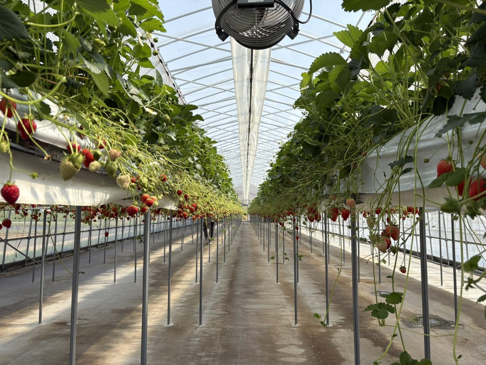
練乳とチョコソースは各ハウスの冷蔵庫に常備されていて、使い放題。水道も各ハウスにあり便利。複数の品種が楽しめるのも嬉しい。椅子とテーブルはそこまで多くはないので、混雑時は譲り合いが必要かも。60分制の食べ放題。
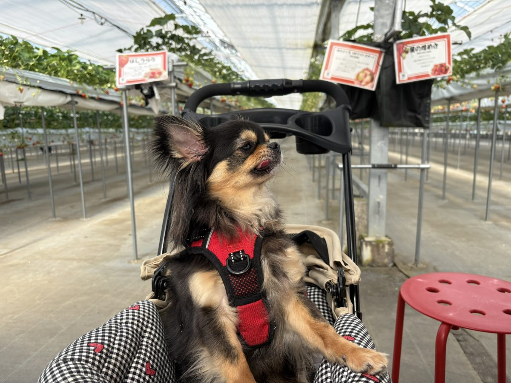
ハウスの中は風が通らないので、晴れた日は意外と暑い。一方で外は風があって涼しいくらいだった。トイレはあったけれど仮設っぽい感じだったので、すぐ隣のアグリパーク竜王を利用するほうが綺麗で便利。
高野いちご園（第2）のポイント
- 犬連れOKは第2農園のみ
- 完全予約制（ネット予約）
- 60分食べ放題
- 練乳・チョコソース無料、ドリンクバーあり
- ペットカートがおすすめ
- トイレは道の駅アグリパーク竜王の利用がおすすめ
帰宅、そしてこつぶは…
いちご狩りを満喫したあと、大阪に戻って帰宅。たくさん遊んだこつぶは家に着いてからぐっすり眠っていた。
2日目のまとめ
前の日の大雨が嘘のような快晴。朝の貸切ドッグランから始まって、アグリパーク竜王では前回気づかなかったドッグランと満開の花畑、高野いちご園では犬連れでいちご狩り。たくさん遊んだこつぶは、帰ってからぐっすり眠っていた。
次回は知らなかった「ワンコの湯」（ホリデーアフタヌーンにあるらしい犬用温泉）も試してみたい。
この旅の1日目大雨の琵琶湖西岸で、テラスのカフェと室内ドッグラン。滋賀1泊2日の犬連れ旅（1日目）2日目の訪問スポット
※営業時間や料金は変動する可能性があります。訪問前に各施設の公式サイトでご確認ください。